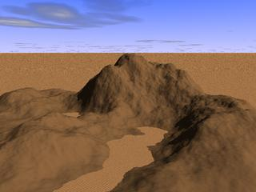
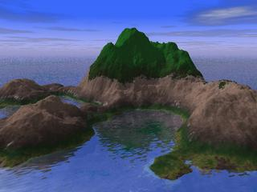

A gaussian "shape filter" can be used to make an
"island" with
the height field. The shape filters are available in the creation
dialog or
as a tool
A gaussian "shape filter" can be used to make an
"island" with
the height field. The shape filters are available in the creation
dialog or
as a tool  .
.|  |
|
 |
 |
 |
 |
| From version 0.40, Geomorph put the
height field names in predefined variables in geomorph.inc: main_terrain = "test.png" ou le
terrain en cours d'édition
water_map = "hf_water.png" ground_map = "ground_map.png" background_map = "hf_background.png" crater_map = "craters.png" |
 Back to the documentation index
Back to the documentation index